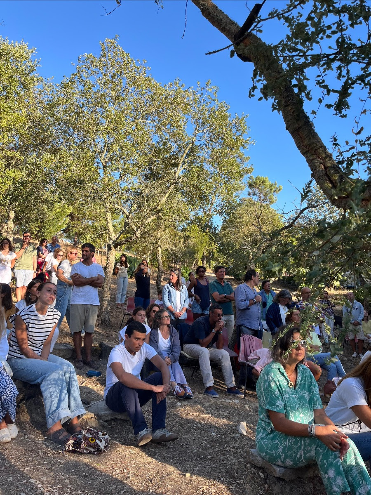
InÃcio do Ano Pastoral
FamÃlia, entrega e oração: um arranque vivido em comunidade, com energia jovem e espaços de acolhimento.
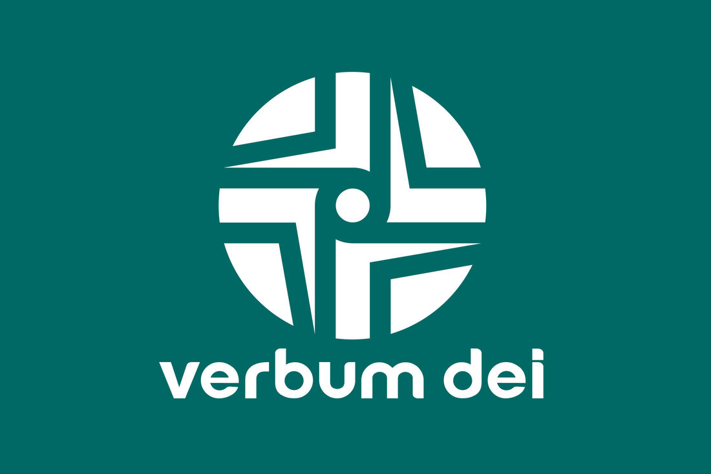
verbum dei lisboa
FamÃlia, entrega e oração: um arranque vivido em comunidade, com energia jovem e espaços de acolhimento.
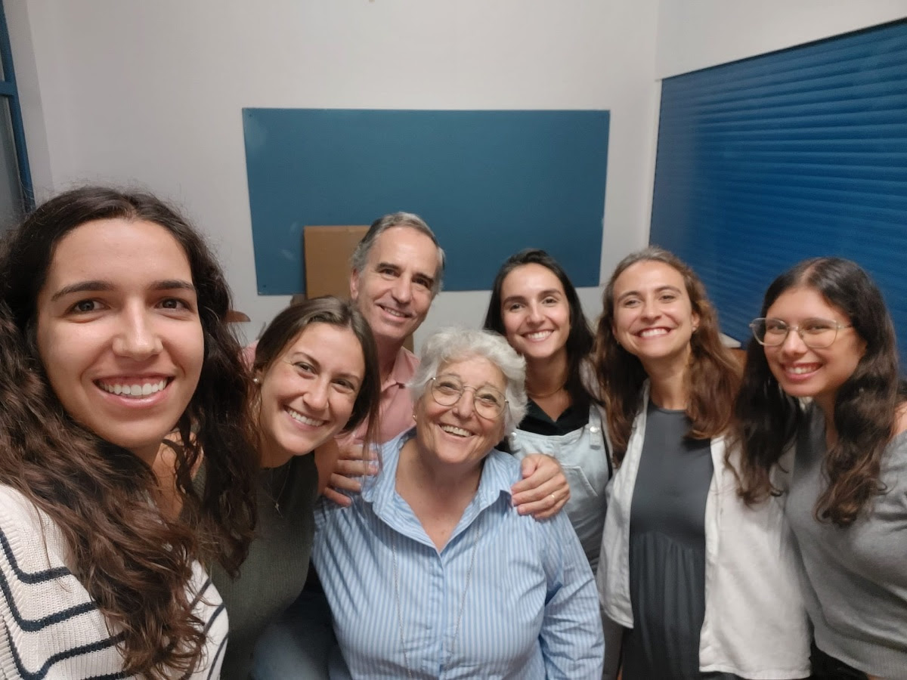
Nascimento do Grupo de Voluntariado VD e inÃcio de um percurso para discernir o sentido concreto de servir.
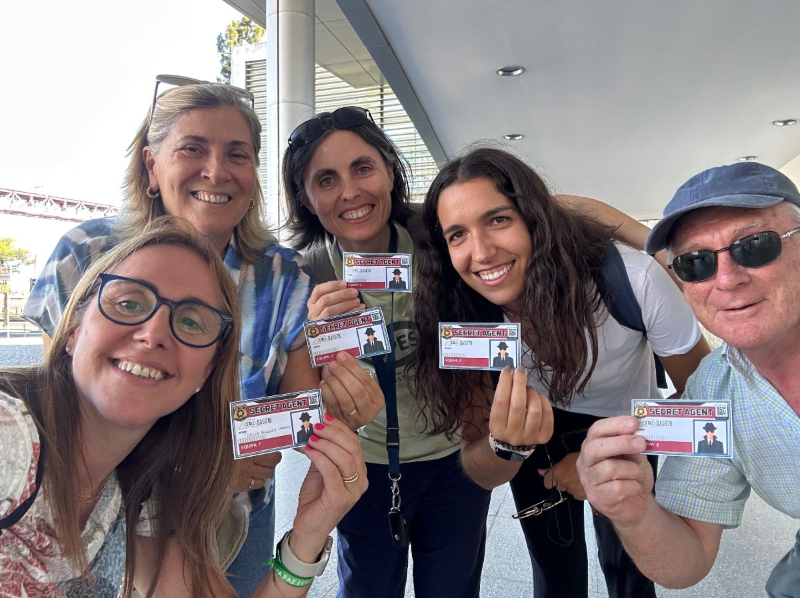
Um dia de alegria, amizade, pistas e descoberta, fortalecendo comunidade e encontro com Deus.
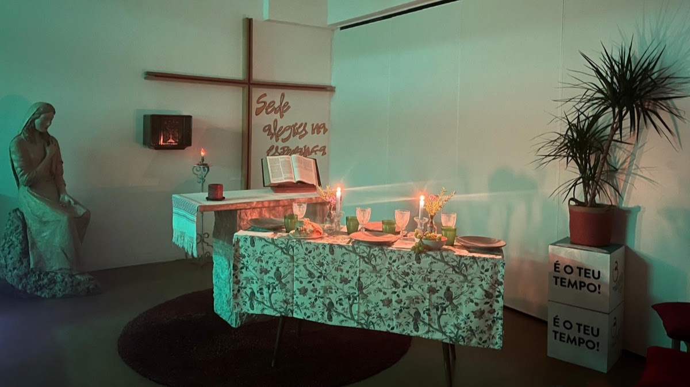
Encontros de oração centrada na Palavra, ajudando a descobrir novas formas de relação com Jesus.
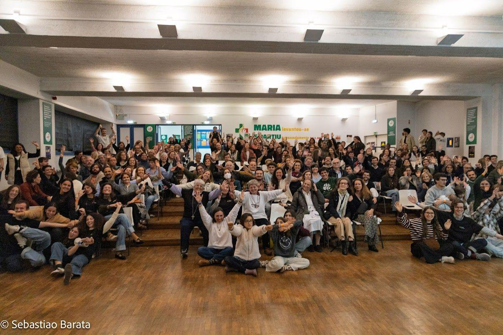
Celebração de um percurso fecundo de evangelização, acompanhamento e crescimento na fé.
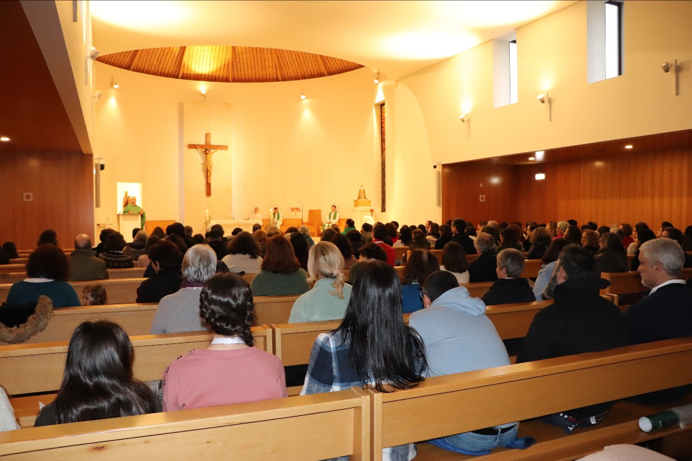
Reencontro das comunidades VD em Portugal, celebrando unidade, gratidão e pertença ao mesmo carisma.
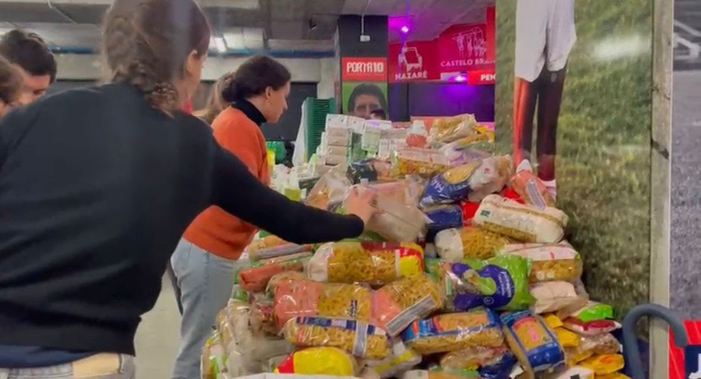
Resposta solidária à s cheias, com recolha de bens e apoio concreto a famÃlias afetadas.
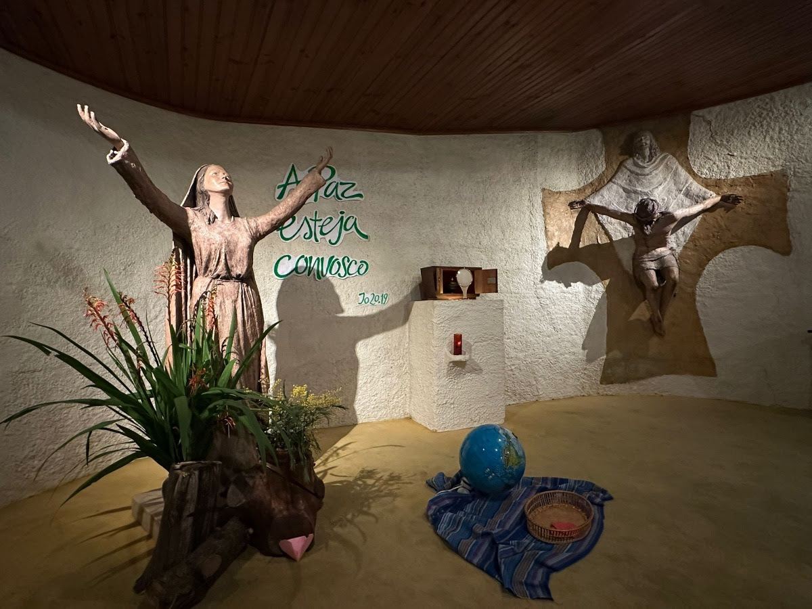
Tempo de oração, escuta e recentramento no essencial, aprofundando a paz recebida de Jesus.
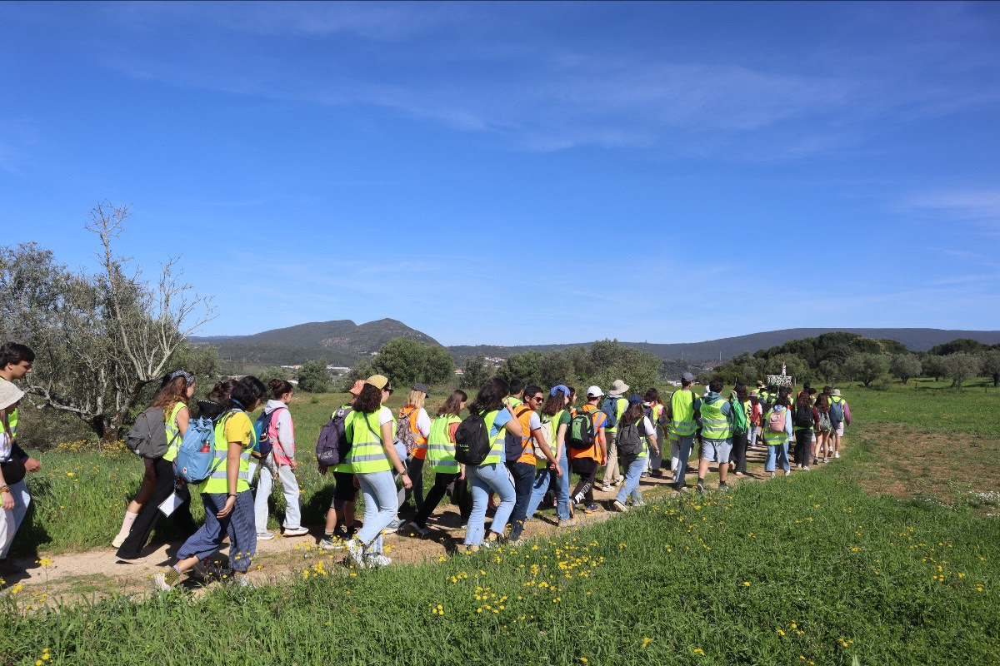
Caminho inspirado nos DiscÃpulos de Emaús, vivido com alegria, amizade e coração a arder.
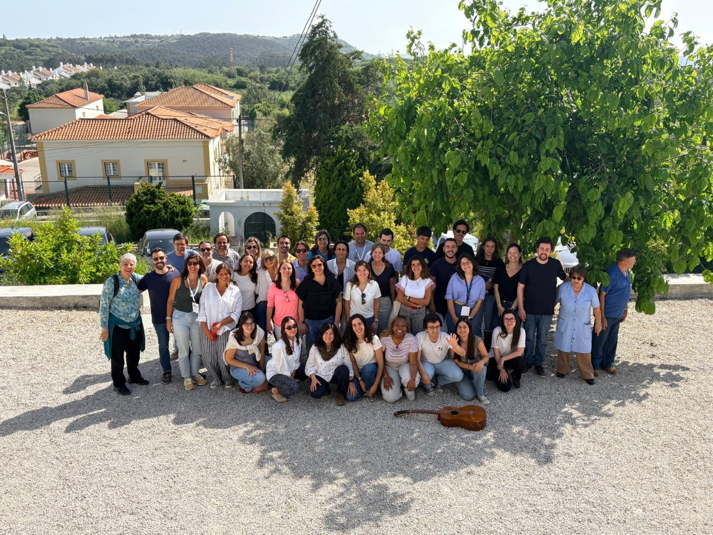
Celebração da Páscoa em Vale de Lobos e na Casa da Palavra, com partilha, simplicidade e presença.

Caminho até Fátima marcado por entrega, oração e força da caminhada partilhada.
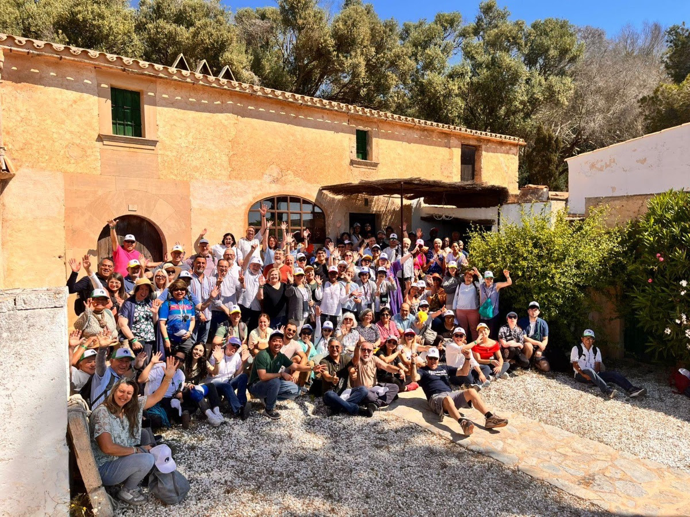
Celebração das raÃzes do carisma: peregrinação a Maiorca e vigÃlia/concerto de oração em Lisboa.
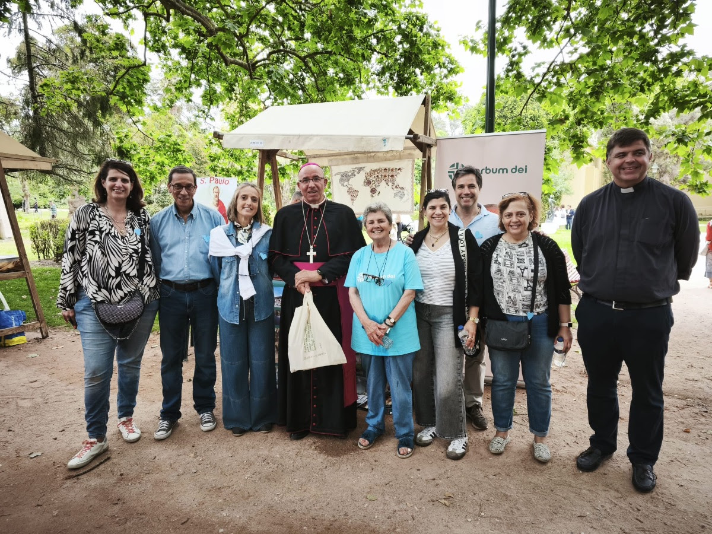
Confirmação da fé, vocação, reencontro com o essencial e presença junto da Pastoral Familiar.